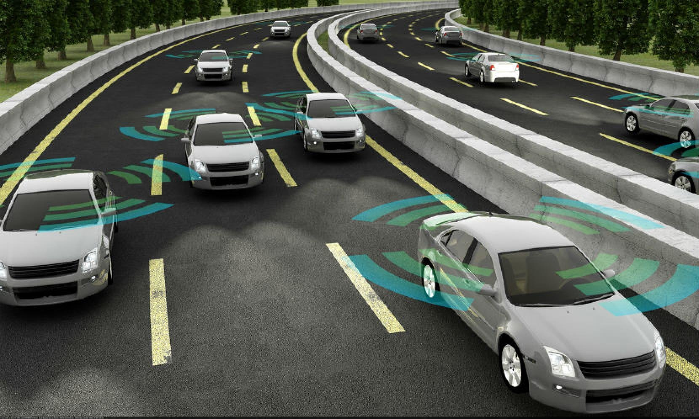

Autonomous Vehicles

An autonomous vehicle is any vehicle (most commonly cars) that has the ability to complete certain tasks and actions
without the input from a human. Currently autonomous vehicles have a special classification to describe the height of
its self-driving abilities, ranging from level 0 to level 5. Starting from level 0 (No Automation), this involves no autonomy,
where the driver has full control of the car. The car does not have any ability to maneuver itself or assist the driver in any
situation. Level 1(Driver Assistance) is where the car can now control certain functions the car such as either steering,
acceleration or braking. Level 2 (Partial Automation) allows the car to be able to steer, accelerate, decelerate and brake,
all while the driver does not have his hands on the wheel. Level 3 (Conditional Automation) now allows the car to completely
drive in the correct conditions, where driver input is only needed in conditions where the car cannot navigate.
Currently, most if not all car manufacturers are at level 3 of automation. Level 4 (High automation) These vehicles have the
ability to perform close to all road driving tasks without user input, but do not cover every driving situation.
Level 5 (Full automation), at this level the car will be no different to that of a human driver, and will require no human
input whatsoever.
Autonomous car are equipped with a multitude of sensors and radars called “LIDAR”. This allows for the vehicle to have a
complete perspective of its surroundings, as well as have the ability to be able to perceive aspects of the road such as lane
markings, street lights and road signs and evidently other cars. Ultimately this allows for car to be able to safely drive
itself on the road, with little to no input from the actual driver. Currently the most common autonomous vehicle technology
available for consumer purchase is being developed by car manufacturers such as Tesla, Mercedes and Audi.
Currently these cars have the ability to detect up to 5 metres around the car in any direction while traveling at any speed,
this allows the car to be able to make safe and cautious decisions when deciding if it is appropriate to complete actions such
as changing lanes. Some cars can see up to hundreds of metres ahead, but they still depend on human input in many road conditions..
The technology lets the car control the breaks and speed of the car while traveling in a lane, steer the car, change lanes and
self-park, both in perpendicular and parallel. In addition, the driver is not required to even be in the car to be begin
operating it, as manufactures such as both Tesla and Audi have developed technology that allows these cars to automatically
start and drive towards the users, as well as park themselves again. In the next 3 years vehicles are expected to be able to reach
level 4 automation. Currently the only vehicle close to this is the Google “FireFly” pod car, which can operate without a steering
wheel or pedal, but can only travel at a top speed of 25 mph, enabling performance in real world scenarios.
Development of these level 4 vehicles is being made possible through the advancements of LIDAR sensors which are not only close to
50% cheaper in comparison to previous years, but also have been improved in their operation, allowing for increased research and
development into autonomous vehicle technology. Level 5 autonomous vehicles are still not available for consumers, and some
concept level 5 vehicles show up in auto shows. We are have a long way to go before level 5 vehicles are available to consumers.
Overall, autonomous vehicles will have a positive impact in the world. Primarily, the development of these vehicles would result in a substantial drop in the amount of car accidents that occur across the world due to the partial elimination of human error in these incidents. Furthermore these vehicles would have the ability to autonomously do things such as collect data for mobile service and technology supplier’s which would overall result in an increase in both research and development in technology and the global economy. Additionally, development of these autonomous vehicles would also soon result in the development of electric vehicles which are superior to petrol vehicles in terms of protecting the environment resulting in overall lower global energy consumption.
Conversely, autonomous vehicles could have a negative impact because of the amount of jobs that could be made redundant due to their use. This would primarily include jobs such as truck and taxi driving, the most common jobs in countries such as the USA. This would also affect people such as mechanics and auto body repair shops due to the significant decrease in car problems and accidents that will occur. Even government jobs such as public transport positions train, bus, V-line and tram drivers will be effects as a driver is no longer needed for their operation.
In our daily lives, autonomous vehicles will affect in us in various ways. Personally, autonomous vehicles would overall improve public transport, a major aspect of daily life, as autonomous vehicles would improve transport planning as data could be collected on road and traffic matters. Additionally, costs of transport would overall decrease due to less money being spent of paying employees who would usually drive public transport services. Furthermore, this could affect certain family member and friends, most notably those who are elder or disabled. Allowing them to be more mobile than they otherwise could have been.
Blockchain and Cryptocurrencies
 Cryptocurrency is a cashless anonymous payment system that can be modified to accommodate internet of things (IOT) applications.
For example, Expedia now recognises bitcoin as a new payment option for hotel bookings, but it has the potential to include payment
for flights and activities among various other services.
Blockchain, on the other hand, is the actual system cryptocurrency runs on. It is a ledger which is distributed to everyone, everywhere
and to all cryptocurrency users. Every time a transaction goes through it goes on a ledger.
A ledger can only hold so much memory before a new “block” must be created hence the term “blockchain”.
To verify if the transaction has occurred mathematical signatures that need to be mined by “miners” are required.
Any user on the blockchain can mine and verify the transaction which is what makes it safe.
Blockchain offers an open decentralised database for any transaction that holds value where any member of the community has the
ability to verify the transaction hence making it safe. Those that do verify the transaction by mining do get rewarded for doing so.
Cryptocurrency is a cashless anonymous payment system that can be modified to accommodate internet of things (IOT) applications.
For example, Expedia now recognises bitcoin as a new payment option for hotel bookings, but it has the potential to include payment
for flights and activities among various other services.
Blockchain, on the other hand, is the actual system cryptocurrency runs on. It is a ledger which is distributed to everyone, everywhere
and to all cryptocurrency users. Every time a transaction goes through it goes on a ledger.
A ledger can only hold so much memory before a new “block” must be created hence the term “blockchain”.
To verify if the transaction has occurred mathematical signatures that need to be mined by “miners” are required.
Any user on the blockchain can mine and verify the transaction which is what makes it safe.
Blockchain offers an open decentralised database for any transaction that holds value where any member of the community has the
ability to verify the transaction hence making it safe. Those that do verify the transaction by mining do get rewarded for doing so.
Verge is an entirely private network based globally (supports widespread mass adoption) and is a flexible and fast way to exchange currencies.
Verge encourages low cost transactions to be private, fast and efficient so individuals can send and receive payments however they want and for whatever
they choose to buy. This is done through the use of multiple anonymity-based networks such at TOR and I2P which allows the IP addresses of the users to be obfuscated.
Cryptocurrency has a secure method of fraud prevention through use of cryptography. Crypto-coins stay safe because of “keys” which are blocks of information that can be used to
make mathematical guarantees about messages in order to confirm that whoever is sending the coins is the actual owner of the coins. Keys are given to an individual once they have
created an account for cryptocurrencies. This account is called a “wallet” in which two unique keys are given, private and public.
The private key is given the ability to take some data and be able to “sign” it so other users on the blockchain have the ability to verify the signature if they choose to.
Private keys cannot be replicated by another user. To be able to see and verify the transaction, the public key is used to see if the signature is valid.
Hence, if the public key works that is clear evidence that the coins sent was signed by the private key and was something that was meant to be sent.
In the next three years, it is expected that peer to peer trading will become more common for more uncommon things such as paying off energy trading.
Power ledger have collaborated with KEPCO in Japan to establish a direct link between the power ledger and the meter in which the Power ledger platform can access the meters
data hence the appropriate billing and trading of coins to pay off that debt will occur accordingly.
Power ledger will provide KEPCO access to their platform, so they can be able to monitor electricity transactions between users which enables and incorporates
peer to peer trading methods hence giving an opportunity to also generate invoicing, evaluating the trading position of each individual participant and validating the
security and accuracy of the platform.
The major technological companies will become more decentralised. Facebook released a statement saying that technology was meant to be a decentralizing force that was for the people
and now because of the rise of a small amount of major tech companies and governments using technology to watch their citizens, technology has become a way that centralises power instead of decentralising it.
Mike Zuckerberg state that he would look at cryptocurrency and blockchain that take power from centralised systems available and place it back into the people’s hands.
Technology experts also believe that cryptocurrency has the potential to store various kinds of confidential information in different ways such as in a way that another company or even the government
would not have any control or access on that information hence be free from its influence and the bias it may bring.
This development will allow anyone around the world that has a mobile phone device and the internet to be able to set up their own wealth or “wallet”.
With cryptocurrency all that is needed is a mobile
device and an internet connection to be able to create a wallet and it’s completely free. People living in poverty or in low conditions don’t
have access to a bank account at all but some of them do have a mobile device and a connection to the internet.
Through this, the individual will be able to set up their own “wallet” and be able to trade and use their coins so they can either invest and
grow more or to trade for goods and services.
When cryptocurrency got released banks finally had a competitor that they haven’t had for centuries. An opponent that will be able to challenge
their ways and regulations placing a centralised form of government to something that is decentralised and placed in the people’s hands.
Both of which can do the same thing, build wealth. When crypto became more popular the banks were forced to upgrade their systems and protocols,
so they can keep their customers hence Pay ID was introduced.
As an investor for bitcoin amongst various other cryptocurrencies, blockchain technology is an opportunity for me to gain some financial gain.
Cryptocurrency allows me a way to increase my current wealth as the prices for each individual coin regularly fluctuate which allows me to keep
trading and build my wealth. The crypto coins that I would have allows me to potentially trade them for assorted items in the securely and in some
cases anonymously. This is different to me as monetary prices don’t fluctuate as much as cryptocurrency does hence allowing me to make a greater profit.
With cryptocurrency I would be able to directly transfer money almost instantaneously between people hence making it extremely efficient.
International money transfer takes approximately 5 business days to be able to transfer money in banks as it has multiple steps that need to be gone
through before the money reaches the recipient. However, the bitcoin protocol runs over the internet hence the recipient will receive your money
almost instantly.
Cybersecurity
 (1.2k words)
(1.2k words)
Robots
A robot is a automated mechanical machine that has a program within its hardware system, which can enhance or assist with
activities in the everyday life of the human race. The state of the art of robots is greatly advanced compared to historical periods,
since the continuous growth of artificial intelligence has improved well as a result from developing science and technology milestones step
by step. The main characteristics that determine what a robot is, are distinguishing components like whether the machine can detect its
surrounding environment, can execute tasks autonomously without any human control, intelligently respond to complex problems such as ‘sensing’ and ‘actuation’.
There are many different types of state of the art robotics and they all enhance and excel at a task greater than what a human can.
For example, a state of the art robot can perform an extremely precise medical procedure better than any human doctor as human error may occur.
However, there are other State of the art robotics that affect completely different areas and fields. Such as a robot intelligently recording and
sending data from different planets back to earth. What may be implemented in the not so distant future is a full robotic AI which can use enhanced
learning to enhance different capabilities. Artificial Intelligence robots can be used for close to anything and can help complete complex and simple tasks
without having to be programmed exactly what to do, it will be able to learn what to do and how to do it.
However, it will not be able to be creative or come up with ideas. A advanced AI robot like might be available in 3 year however it is doubtful that it would
have a consumer friendly price and can be priced in the million’s, but nonetheless is can still be developed and made.
There a lot of developments that could make advancement in AI possible, improved programming and new programming languages, as well as better batteries and
performance functions, increased processing power will allow the AI to understand and think more intelligently faster.
There are many potential impact of this development as this can change the way people live and use technology as it could become a part of everyone lives all the time.
Depending on how the AI robot is used for this could dramatically speed up research in multiple different areas of study, fix a dangerous or potentially
dangerous situation in, increase the general standard of living that a person has. As the AI robotics has huge potential there are some general good and bad
examples of what potential could happen sometime in the future. A positive difference that Ai robots could have to people is to perform tasks that other
people might not want to do or wish to do such as mundane house work like clean the dishes, go to buy groceries dropping off or pick children up from school,
lifting heavy objects. This could affect all types of people equally as it could change the way everyone lives such as helping a child do their homework for
however long they are need, to helping an adult with complex problems or doing simple house chores, to looking after the elderly assisting them with any of
their need and making sure medication is taking on time and that they always have medication to take.
However, AI robotics could have a very negative side such as creating robots to fight in wars and to kill other people.
Such an advancement would make the robot capable of wiping out people that do not have this technology and may encourage nations to go to war with each other as it
has a technology advantage and can easily defeat other countries that don’t have this technology. Even if robot fought for a against another country
with robots then it would be commercialising war which made lead to encouraging war. Even if no human lives are taken in that sort of war, lot of resources
could be wasted on a war for commercial proposed rather than on other useful things that advanced AI robotics could offer. As the price of AI would be way
too high for the general population AI robotics would be mostly used with research that has a significantly high budget such as NASA.
High tech business may also use AI robotics in and around its business to increase work productivity and performance.
This would not change much for many people until it becomes integrated in today current world. This technology has the potential to make a lot of current
jobs redundant such as from almost every sector such as taxi driver, checkout people at stores, infantry soldiers, babysitting, surgical doctors, assistant
jobs, etc. it has the potential to make most jobs from basic tasks and complex task redundant but cannot make research jobs or jobs implementing ideas jobs.
Although it would make many jobs related to how the robots are used and how the feature of the robot can be improved.
In my daily life if AI robots are
affordable this would improve my transport use and could be used to helping me get from place to place, do general job around the house like cleaning, cooking,
laundry, taking out the bins etc. It can also help me with studies by repeating information that it has currently available to it.
What would be different for me is that I would not use it in a business environment where other people may be using AI in their daily jobs and around their
house. This will affect my family and friends by giving them more time to do whatever they wanted and would make them happier to not do mundane house work.